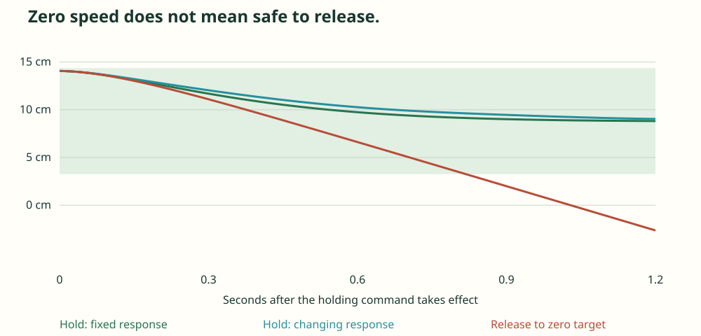

17 October 2026 · checked mathematics · synthetic examples
Plan often. Switch safely.
We now have two useful controls pieces: a proof for switching from a noisy state reading into bounded-position holding, and a separate proof for smooth motion-plan replacements. The connection between them remains open.
Manim Community animation. Curves are numerical illustrations; the bounded-position result has a separate Lean proof. The shaded region is the certified holding tube.
Why zero speed is not enough
The actuator can still have nonzero acceleration when velocity reaches zero. Setting the target to zero lets that acceleration decay, but the axis can acquire a lasting backward velocity. Lean checks an actual trajectory that eventually crosses any finite rear limit, even with exactly zero initial velocity.
The safer handoff checks position, velocity and acceleration together. It preserves the actual state at the switch. It then uses a feedback law whose position bounds have been proved for changing response.
The accepted reading and the resulting motion
| Quantity | Value |
|---|---|
| Position reading and error | 14 cm ± 1 mm |
| Velocity reading and error | −0.01 ± 0.01 m/s |
| Acceleration reading and error | −1.17 ± 0.05 m/s² |
| Command delay | Any duration from 0 to 5 ms; acceleration magnitude ≤2 m/s² and jerk magnitude ≤48 m/s³ during that delay |
| Holding reference | 8.8125 cm. The controller can move backward toward this reference. |
| Certified position region | [3.26, 14.365] cm, inside the original [0, 15] cm range |
| Response and error during holding | Rate 8–12 per second; additive acceleration-target error magnitude ≤0.11105 m/s² |
| Required effective-target authority | Magnitude ≤1.44365 m/s², within the illustrative ±2 m/s² capability |
a′ = r(t)[u + w(t) − a]
c: holding reference w: acceleration-target error
The proof transforms the physical state into three coordinates and shows that none can leave a fixed cube. The physical differential equations imply the transformed equations. The safety conclusion is derived; it is not included as an assumption.
The same reading with a 20 ms delay fails the exact rational admission test. Its proposed region extends beyond the travel interval and requires more target authority. This is a rejected sufficient certificate, not a proof that every such trajectory is unsafe.

The existing weak/slow brake flow reaches a state consistent with this reading at 0.53 seconds. That reachability check and the plotted simulations are numerical. Results · Experiment source.
Twenty new theorem statements pass fresh source compilation, standard-axiom audits and individual kernel replays. The check also rejects a false 14 cm tube claim. Final handoff theorem · Holding proof · Measurement and delay proof · Release counterexample.
For VLA motion: thinking and switching are separate decisions
A minimum wait between replans does not guarantee smooth motion. The next command can still jump in acceleration. The new VLA mathematics checks a stronger rule: join the currently executed position, velocity and acceleration, then certify the limits over the whole new segment.
Lean proves that matching replacements preserve a fixed jerk bound through any finite certified replacement history, with no minimum dwell assumption. Jerk is the rate of acceleration change. It may change abruptly; acceleration remains continuous. The report makes scheduling and finite-history limits explicit.
One example accepts successive 20 ms segments under a jerk limit of 10 m/s³. A proposed 2.5 mm endpoint over the first 20 ms would require 375 m/s³ in this construction, so the same test rejects it. Twenty-four theorem statements passed compilation, axiom audit and kernel replay.
A 27-second Manim explanation of the scalar command proof. The example is a constant-jerk construction, not a general planner comparison or a physical robot test. Animation scope and reproduction.
Read the VLA result and seven primary-source comparisons · Lean proof · Verification.
This checks scalar commanded motion. Physical tracking, orientation, contact force, grasp stability and task progress remain open. Bounded jerk can still permit repeated reversals and indecision. A progress rule or mode hysteresis may help, but it needs a task-specific definition of progress.
The connection worth testing next
Accept a new plan only when it joins the executed motion smoothly, fits the physical uncertainty, and leaves a certified stopping or holding fallback. This could connect the VLA admission proof to the actuator proof. We have not proved that combined contract.
The next comparison should feed the same delayed, changing target stream to raw replacement, minimum dwell, established continuation methods, a jerk-limited generator and our checked admission rule. Compare actual constraint violations, response delay, task completion and fallback use. Existing methods already address much of this space; a new publication claim needs that comparison and a useful difference.
Geometric Unity continues as a separate mathematics track
The agent added a checked sign audit and a finite coefficient construction. Twenty-six theorem statements pass compilation, axiom audit and kernel replay. An independent reviewer confirmed the local scope.
The printed sign conventions produce an extra term; two local repairs are checked. This is a convention mismatch already foreshadowed by the author's warning, not a general obstruction to the theory. The coefficient construction derives a conjugation law. Connecting those coefficients to the actual exterior product, Hodge star and invariant tensors remains open.
Geometric Unity report · Independent source and proof review. Missing library code is being implemented where the mathematical construction is precise.